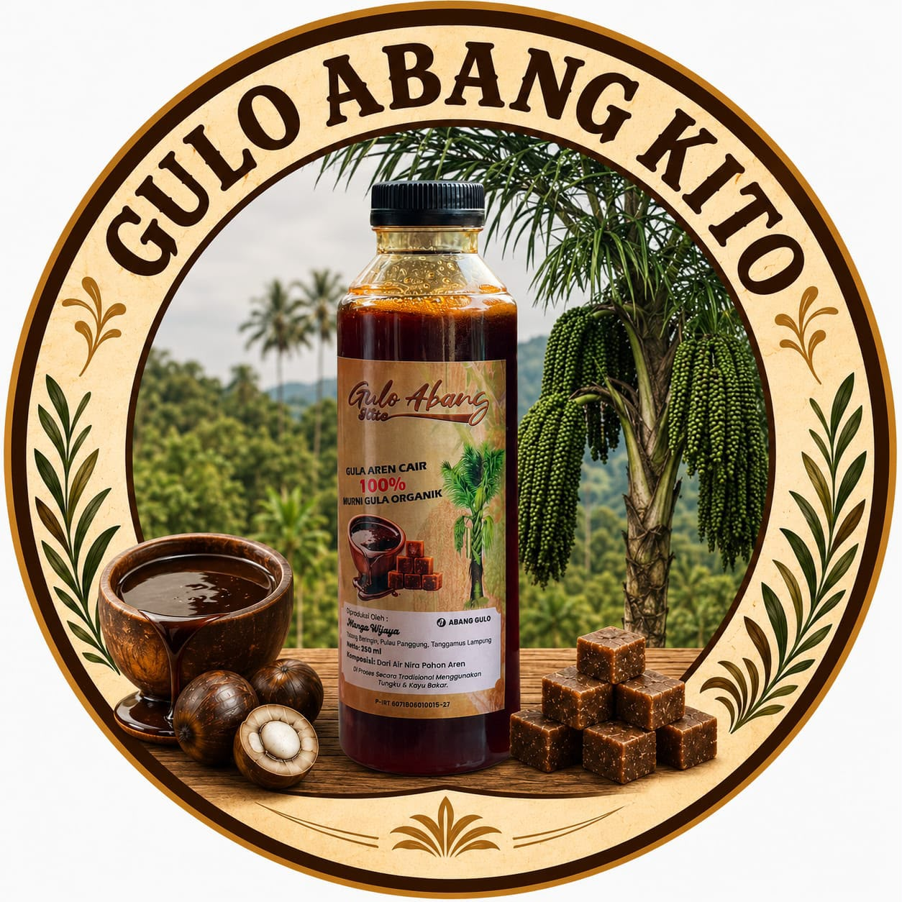

Gulo Abang Kito
Gula Aren & Kopi Lampung
Gulo Abang Kito merupakan UMKM penghasil gula aren berkualitas dari Pekon Talang Beringin, Kecamatan Pulau Panggung, Kabupaten Tanggamus, Lampung. Diproses secara tradisional untuk menghasilkan cita rasa alami dan berkualitas.